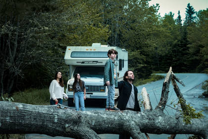
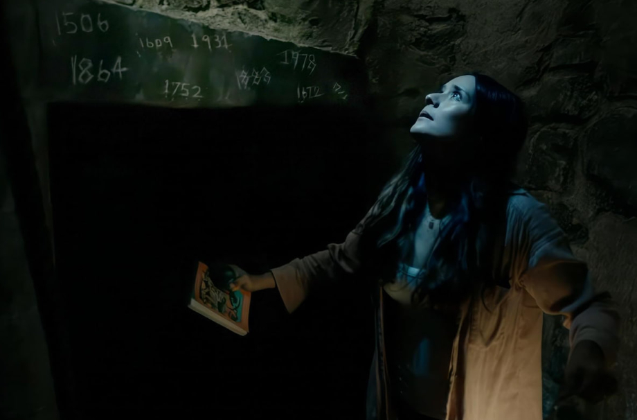
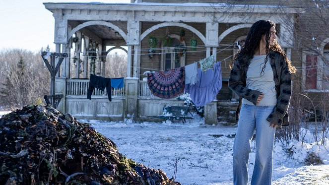

Експозиція: Місто без виходу
Фундаментальна концепція серіалу «Ззовні» будується на ідеї топологічної пастки. Будь-яка людина, яка бачить на дорозі повалене дерево, навколо якого кружляють ворони, автоматично стає бранцем таємничого поселення. Головна особливість цього місця полягає в тому, що всі дороги неминуче повертають мандрівників назад до центру містечка, незалежно від швидкості чи напрямку руху.
Офіційний трейлер, що демонструє атмосферу перших днів перебування в пастці.
Сезон 1: Правила виживання та талісмани
Перший сезон фокусується на прибутті сім'ї Метьюз – Джима, Табіти та їхніх дітей. Вони знайомляться з шерифом Бойдом Стівенсом, який зміг структурувати життя громади після років хаосу. Бойд знайшов у лісі кам'яні талісмани, які, за умови закритих дверей та вікон, не дозволяють нічним монстрам заходити всередину.
Монстри в «Ззовні» – це істоти, що імітують вигляд людей 1950-х років. Вони не бігають, не кричать, а повільно йдуть, посміхаючись і маніпулюючи страхами мешканців. Фінал сезону залишає глядача з шокуючим відкриттям: Табіта та Джим копають яму під будинком, щоб знайти джерело електроенергії, але виявляють, що дроти ведуть у нікуди.


Сезон 2: Цикади та бачення
Другий сезон розширює межі міфології. До міста прибуває автобус із 25 пасажирами, що ставить під загрозу крихкий баланс ресурсів. Тепер небезпека стає менш фізичною і більш психічною. З'являється загадкова лічилка про «цикад», яка змушує мешканців переживати кошмари наяву, а деякі герої впадають у смертельний транс.
Шериф Бойд Стівенс знаходить таємничого старця Мартіна, прикованого ланцюгами в руїнах замку, і отримує через кров «хворобу», яка стає зброєю проти монстрів. Табіта Метьюз, слідуючи за баченнями «дітей-привидів», знаходить Вежу і, після падіння з неї, раптово прокидається в реальному світі в лікарні святого Антона.
Сезон 3: Велика зима та Анкойя
Третій сезон кардинально змінює візуальний стиль проекту – у містечку вперше за десятиліття настає зима. Сніг та мороз роблять виживання майже неможливим, оскільки врожаї гинуть, а тварини зникають. Монстри стають агресивнішими та хитрішими, використовуючи голод мешканців як інструмент тортур.
Основна увага приділяється спробам Табіти повернутися назад у пастку, щоб врятувати родину, та розгадці слова «Анкойя». Глядачі дізнаються більше про минуле Віктора та його матері, яка також намагалася врятувати дітей через портали в деревах. Сезон завершується драматичною кульмінацією, яка ставить під сумнів можливість будь-кого колись залишити це місце живим.

Чого чекати у 4 сезоні?
Офіційне продовження заплановане на 2026 рік. Творці натякають, що сюжетні лінії реального світу та містечка нарешті зіллються. Основні питання, на які чекають відповіді: хто такий «Хлопчик у білому», яка роль «Чоловіка в жовтому» і чи є місто частиною масштабного експерименту з часом і простором.